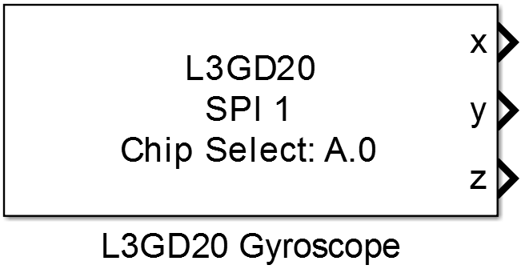
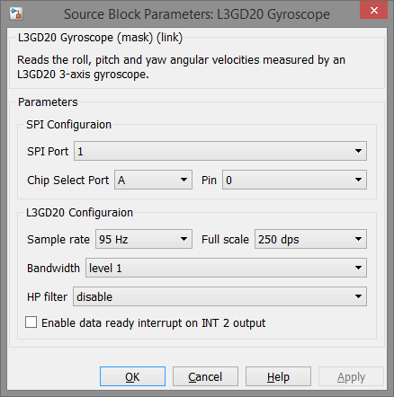

9.7. L3GD20 Gyroscope
Reads the roll, pitch and yaw angular velocities measured by an L3GD20 3-axis gyroscope.
9.7.1. Library
/SPI
9.7.2. Description
{kind=link}
This block reads the angular velocity measurement of an LS3GD20 3-axis gyroscope. The L3GD20 device provides different sample rates for the internal ADC and three different measurement ranges. In addition the user can select the bandwidth of the measurement and also select different high pass filter cut-off frequencies as shown in the following two tables.
9.7.2.1. Cut-off frequency [Hz] depending on bandwidth and sample rate selection
| Bandwidth | Sample rate | |||
|---|---|---|---|---|
| @ 95 Hz | @ 190 Hz | @ 380 Hz | @ 760 Hz | |
| level 1 | 12.5 | 12.5 | 20 | 30 |
| level 2 | 25 | 25 | 25 | 35 |
| level 3 | 25 | 50 | 50 | 50 |
| level 4 | 25 | 70 | 100 | 100 |
9.7.2.2. High pass filter cut-off frequency [Hz]
| HP filter level | Sample rate | |||
|---|---|---|---|---|
| @ 95 Hz | @ 190 Hz | @ 380 Hz | @ 760 Hz | |
| level 0 | 7.2 | 13.5 | 27 | 51.4 |
| level 1 | 3.5 | 7.2 | 13.5 | 27 |
| level 2 | 1.8 | 3.5 | 7.2 | 13.5 |
| level 3 | 0.9 | 1.8 | 3.5 | 7.2 |
| level 4 | 0.45 | 0.9 | 1.8 | 3.5 |
| level 5 | 0.18 | 0.45 | 0.9 | 1.8 |
| level 6 | 0.09 | 0.18 | 0.45 | 0.9 |
| level 7 | 0.045 | 0.09 | 0.18 | 0.45 |
| level 8 | 0.018 | 0.045 | 0.09 | 0.18 |
| level 9 | 0.009 | 0.018 | 0.045 | 0.09 |
9.7.3. Data Type Support
The block’s output data type is single.
9.7.4. Parameters and Dialog Box
9.7.4.1. SPI Port
Selects the SPI peripheral wich is configured by an SPI Master Config block.
9.7.4.2. Chip Select Port and Pin
Configuration of the MCU Pin the device’s chip select input is connected to.
9.7.4.3. Sample rate
Selects the output data rate of the L3GD20 device.
- 95 Hz
- 190 Hz
- 380 Hz
- 760 Hz
9.7.4.4. Full scale
Selects the input measurement range
- 250 dps
- 500 dps
- 2000 dps
9.7.4.5. Bandwidth
Selects the input bandwidth. (see bandwidth table above)
9.7.4.6. HP filter
Enables the internal high pass filter and configures the cut-off frequency. (see high pass filter table above)
9.7.4.7. Enable data ready interrupt in INT2 output
Enables the data ready output signal to the INT2 pin of the L3GD20 device.
Note
To use the data ready interrupt in the model a Digital Input or Interrupt block of the GPIO library must be configured to get the value of the INT2 pin at the connected MCU pin.